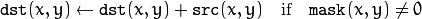
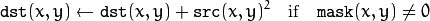
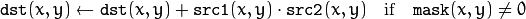
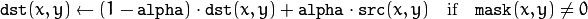
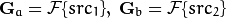
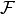
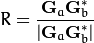
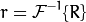
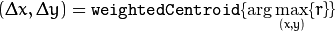

Motion Analysis and Object Tracking¶
accumulate¶
Adds an image to the accumulator.
-
C++:
accumulate(InputArray src, InputOutputArray dst, InputArray mask=noArray() )¶
-
Python:
cv2.accumulate(src, dst[, mask]) → None¶
-
C:
cvAcc(const CvArr* image, CvArr* sum, const CvArr* mask=NULL )¶
-
Python:
cv.Acc(image, sum, mask=None) → None¶ Parameters: - src – Input image as 1- or 3-channel, 8-bit or 32-bit floating point.
- dst – Accumulator image with the same number of channels as input image, 32-bit or 64-bit floating-point.
- mask – Optional operation mask.
The function adds src or some of its elements to dst :

The function supports multi-channel images. Each channel is processed independently.
The functions accumulate* can be used, for example, to collect statistics of a scene background viewed by a still camera and for the further foreground-background segmentation.
accumulateSquare¶
Adds the square of a source image to the accumulator.
-
C++:
accumulateSquare(InputArray src, InputOutputArray dst, InputArray mask=noArray() )¶
-
Python:
cv2.accumulateSquare(src, dst[, mask]) → None¶
-
C:
cvSquareAcc(const CvArr* image, CvArr* sqsum, const CvArr* mask=NULL )¶
-
Python:
cv.SquareAcc(image, sqsum, mask=None) → None¶ Parameters: - src – Input image as 1- or 3-channel, 8-bit or 32-bit floating point.
- dst – Accumulator image with the same number of channels as input image, 32-bit or 64-bit floating-point.
- mask – Optional operation mask.
The function adds the input image src or its selected region, raised to a power of 2, to the accumulator dst :

The function supports multi-channel images. Each channel is processed independently.
accumulateProduct¶
Adds the per-element product of two input images to the accumulator.
-
C++:
accumulateProduct(InputArray src1, InputArray src2, InputOutputArray dst, InputArray mask=noArray() )¶
-
Python:
cv2.accumulateProduct(src1, src2, dst[, mask]) → None¶
-
C:
cvMultiplyAcc(const CvArr* image1, const CvArr* image2, CvArr* acc, const CvArr* mask=NULL )¶
-
Python:
cv.MultiplyAcc(image1, image2, acc, mask=None) → None¶ Parameters: - src1 – First input image, 1- or 3-channel, 8-bit or 32-bit floating point.
- src2 – Second input image of the same type and the same size as
src1. - dst – Accumulator with the same number of channels as input images, 32-bit or 64-bit floating-point.
- mask – Optional operation mask.
The function adds the product of two images or their selected regions to the accumulator dst :

The function supports multi-channel images. Each channel is processed independently.
See also
accumulateWeighted¶
Updates a running average.
-
C++:
accumulateWeighted(InputArray src, InputOutputArray dst, double alpha, InputArray mask=noArray() )¶
-
Python:
cv2.accumulateWeighted(src, dst, alpha[, mask]) → None¶
-
C:
cvRunningAvg(const CvArr* image, CvArr* acc, double alpha, const CvArr* mask=NULL )¶
-
Python:
cv.RunningAvg(image, acc, alpha, mask=None) → None¶ Parameters: - src – Input image as 1- or 3-channel, 8-bit or 32-bit floating point.
- dst – Accumulator image with the same number of channels as input image, 32-bit or 64-bit floating-point.
- alpha – Weight of the input image.
- mask – Optional operation mask.
The function calculates the weighted sum of the input image src and the accumulator dst so that dst becomes a running average of a frame sequence:

That is, alpha regulates the update speed (how fast the accumulator “forgets” about earlier images).
The function supports multi-channel images. Each channel is processed independently.
See also
phaseCorrelate¶
The function is used to detect translational shifts that occur between two images. The operation takes advantage of the Fourier shift theorem for detecting the translational shift in the frequency domain. It can be used for fast image registration as well as motion estimation. For more information please see http://en.wikipedia.org/wiki/Phase_correlation .
Calculates the cross-power spectrum of two supplied source arrays. The arrays are padded if needed with getOptimalDFTSize().
-
C++:
phaseCorrelate(InputArray src1, InputArray src2, InputArray window=noArray())¶
-
C++:
phaseCorrelateRes(InputArray src1, InputArray src2, InputArray window, double* response=0)¶ Parameters: - src1 – Source floating point array (CV_32FC1 or CV_64FC1)
- src2 – Source floating point array (CV_32FC1 or CV_64FC1)
- window – Floating point array with windowing coefficients to reduce edge effects (optional).
- response – Signal power within the 5x5 centroid around the peak, between 0 and 1 (optional).
Return value: detected phase shift (sub-pixel) between the two arrays.
The function performs the following equations
First it applies a Hanning window (see http://en.wikipedia.org/wiki/Hann_function) to each image to remove possible edge effects. This window is cached until the array size changes to speed up processing time.
Next it computes the forward DFTs of each source array:

where  is the forward DFT.
It then computes the cross-power spectrum of each frequency domain array:

Next the cross-correlation is converted back into the time domain via the inverse DFT:

Finally, it computes the peak location and computes a 5x5 weighted centroid around the peak to achieve sub-pixel accuracy.

If non-zero, the response parameter is computed as the sum of the elements of r within the 5x5 centroid around the peak location. It is normalized to a maximum of 1 (meaning there is a single peak) and will be smaller when there are multiple peaks.
createHanningWindow¶
This function computes a Hanning window coefficients in two dimensions. See http://en.wikipedia.org/wiki/Hann_function and http://en.wikipedia.org/wiki/Window_function for more information.
-
C++:
createHanningWindow(OutputArray dst, Size winSize, int type)¶ Parameters: - dst – Destination array to place Hann coefficients in
- winSize – The window size specifications
- type – Created array type
An example is shown below:
// create hanning window of size 100x100 and type CV_32F
Mat hann;
createHanningWindow(hann, Size(100, 100), CV_32F);
See also
Help and Feedback
You did not find what you were looking for?- Ask a question on the Q&A forum.
- If you think something is missing or wrong in the documentation, please file a bug report.